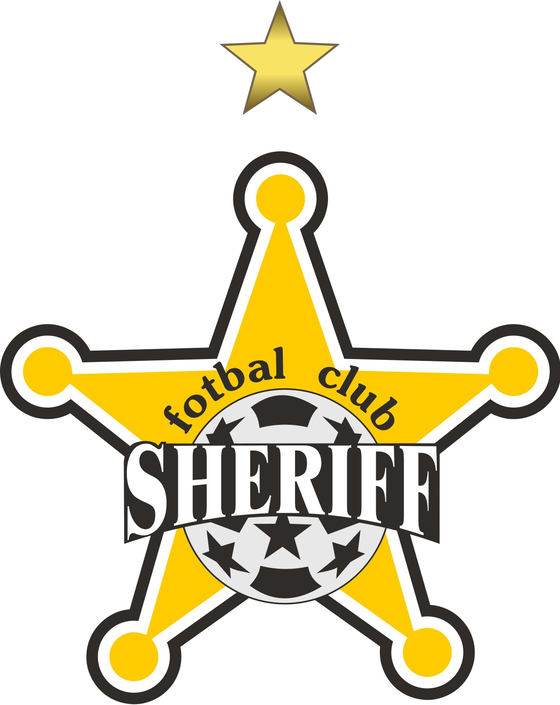

Sheriff Tiraspol este un club de fotbal din Tiraspol, Transnistria, Republica Moldova. Clubul a fost fondat pe 4 aprilie 1997. Echipa își desfășoară meciurile pe Arena principală a Complexului Sportiv Sheriff ce are o capacitate de 13 460 locuri.

În vara anului 1997 are loc debutul clubului de fotbal Tiras care evolua în Divizia „B” a Moldovei. După prima etapă din campionat sponsorul general al echipei devine firma Sheriff iar pe 4 aprilie 1997 echipa își schimbă numele în Sheriff a cărui președinte devine Victor Gușan. Astfel Sheriff Tiraspol este unica echipă care, începându-și evoluția în Divizia B, a reușit nu numai să ajungă în Divizia Națională dar și să câștige în mai multe rânduri titlul de campioană